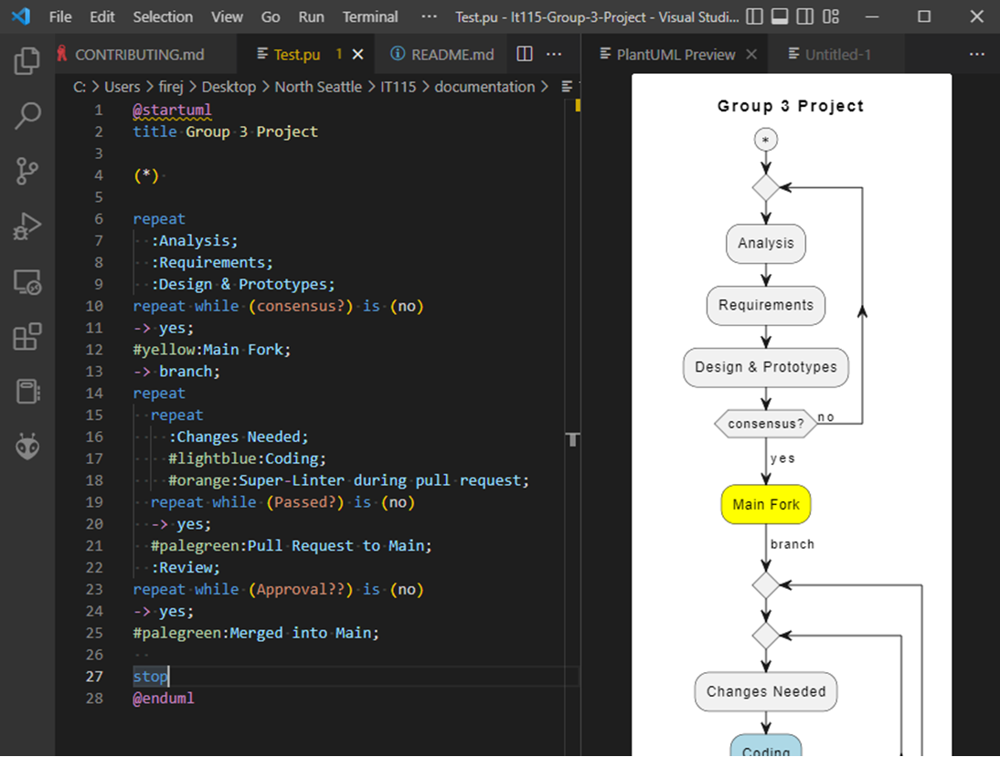

If a picture is a worth a thousand words then these 28 lines of code are worth studying.
This is a UML diagram generator called PlantUML. How is it useful? By using a UML
diagram,
you have found a quick and efficient way to communicate with your team.
The resulting flowchart lays out the logic of how a project or a piece of code should work.
It helps to get the team on the same page and to spot logic errors right away.
How does this work within our git framework? PlantUML is saved as a text file. It can
be
saved in the project and changes in the code can be tracked just like every other text file
in the project.
If it's just text, how do we see an image? In the image below, you can see that I am
using the
preview pane built into Visual Studio Code. Alt + D will bring load it into the preview
page.
PlantUML is:
A great tool for communication.
Easy to understand
Easy to modify
Easy to learn
Because it is text based, it works well in git.
The code changes can be viewed easily.
A great tool for communication.
This is just one capability
